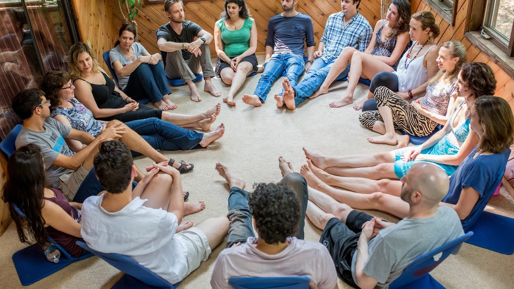

Events & Workshops

I run connection workshops, navigating difficult conversations workshops, and authentic relating / relational meditation events.
Connection
Many people seek deeper connections in their life, but struggle to find others to connect with, or don't know how to create situations where they can feel genuinely open with another person. This workshop teaches a set of powerful, research-backed skills that help you forge deeper, more nourishing connections with the people around you, anytime you want.
Navigating difficult conversations
Difficult conversations are everywhere in life -- with your boss, your romantic partner, your politically-minded relative -- and these conversations often leave people feeling scared, frustrated, or disconnected. In this workshop, we explore how to navigate these conversations in a way that gets you closer to your goals while also deepening your connection & mutual understanding with the person on the other end of the conversation.
Authentic relating / relational meditation
Authentic relating / relational meditation events are opportunities to meet & connect with people in a fun, vulnerable, and surprisingly meaningful way. In "authentic relating" nights, we play a series of games designed to quickly bring people into real connection and explore the space between us. In "relational meditation" nights (also known as "circling"), we take mindfulness meditation and apply it to social interactions, exploring what it's like to be in connection with others in a present-focused and non-judgmental way. These simple exercises can produce profound, life-altering interconnected experiences. (For more information on relational meditation / circling, see
here,
here,
here, or
here.)
Some
testimonials:
"I felt such a strong connection to everyone in the group... The honesty and openness was extraordinary."
"It was wonderful: inspiring, exciting and fulfilling. It made me feel optimistic for the future."
"A couple days later, still feeling the 'afterglow'."
"Best and most personable teacher I have at Harvard."
I'm available to run custom events for teams, groups, or communities! Just shoot me an email and we can discuss what you're looking for :).